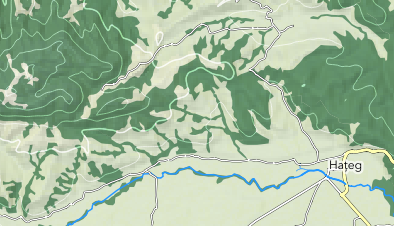

Overview
Before I could develop the tools to help create better maps on geoportals, I had to decide how to model the different elements of a map. Imagine, before you can bake an amazing pie (yummy!), you need to identify the ingredients, their roles and in which order to add them to the batter.
Well, first I look into the ingredient for a map and how they relate to each other. Then, I look into the sequence of tasks and decisions that a cartographer would go though in the map-making process. Many of these aspects have already been researched by previous scholars, but I had to bring them into a model compatible with the context of geoportals.
The model I developped and the rules associates to it are called CartoWiz. Which is what came out of mixing [ Cartography + Wizard + Vis(ualization) ].
Contextual Map Model
The Contextual Map Model provides the basic elements onto which I could formalize cartographic principles into strict rules, that could then be implemented as functions into a geoportal. It includes among other element a map object, layer object, feature objects, style and rule object. In the image below, you find a simplified representation of the contextual map model. In the section further down, some of the parameters of the model are explained more in detailed
Map Types
If you like maps, you probably already realized that maps can look very different from each other as well as serve different purposes. This is what we call map types. Because of the variety of maps and of their content, the map making and design process is such a broad topic. So broad that it would be a unending task. Which is why, we decided to focus on a few map types, the ones that are the most used with the data usually available on geoportals.
General-purpose maps
General-purpose maps focus on displaying the main feature of an area, both physical and man-made. They helps with orientation and understanding the spatial organization of a territory.
Physical maps
Physical maps focus on displaying the topographic features of the landscape, such as mountains, rivers and lakes. They might also show a few cultural information to help with the orientation.
Political maps
Political maps focus on showing administrative boundaries (national, regional, and/or local) and labelling places (cities, regions, countries, etc). They rarely show details of the topography, but might display rivers and water bodies to help with the orientation.

Thematic maps
Thematic maps focus on a specific topic and display thematic data, such as statistics for administrative units or pollution values for a stream. They show some geographic and cultural features for orientation purposes but focus on spatial data with z (or attribute values).

Layer Semantics
As a cartographer, so many decisions I take while I design a map are based on the content of the map and not just on the geometry or data type of the information. A computer can know whether the spatial data have polygon or line geometries or whether the values of the attributes are text or numbers, but it cannot guess the meaning of the content: is this line a river or an administrative border? Is this forest or a lake?
Well, it cannot, as long as you don't tell it.
This means that we need a way to tell the computer what is the semantic (= related to meaning) of the data. After a survey of more than 20 national or regional geoportals, we were able to have an a suitable overview of the content of such geoportals. It allows us to define categories and themes of the most often encountered spatial data.
Layer Categories
Layer categories broadly describe the kind of content of the layers. Major distinctions are made between geographical objects (such as a road or a river) and thematic dat (such as population density or air pollution levels). Among geographic objects another difference is made between “natural” objects and “man-made” objects.
1. Map image
Layers that are complete maps, with several themes combined and symbolized as a whole. Thus, they must be treated differently than other layer. Examples are scanned maps, topographic maps offered as one layer
2. Thematic information
Such layers usually do not represent features on the ground but values associated with administrative areas, a delimited perimeter, or points of measurement. Examples: population density, pollution levels.
Geographical features
These layers represent concrete objects in the real world, meaning that one can go to the location shown on the map and see them. They are divided in the two following categories:
3. Natural
Geographical features that are natural (not man-made). Examples: a mountain, a river, a forest.
4. Cultural
Geographical features that have been made or shape by man. Examples: an airport, a road, a building.
Layer Themes
Layer themes allow a finer differentiation among the topics covered by the layers and usually group features that are similar in terms of semantic and symbolization.
Main Layers
The main layers on the map are the ones that are central to the meaning and theme of the map. They are the ones that should be displayed prominently. Other layers are either secondarily important to the map or they are 'only' on the map as supporting information in the background.